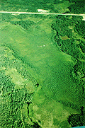
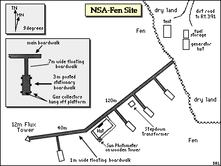
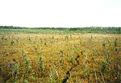
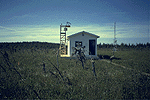
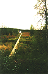
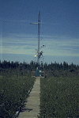
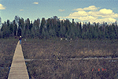
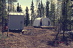
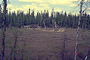
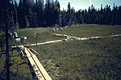

The Fen site had a flux tower in the middle of a fen -- a large boggy wetland. A boardwalk extends out into the middle of the fen, allowing access to plants and soils. There is a collapsed palsa (a pocket of ice covered by ground where the ice melted and the ground collapsed). This is filled with water and has an additional boardwalk in it for trace gas studies. View an aerial photo-map of the NSA-Fen site.
 Location of the NSA within Canada. |
 Location of the Fen site within the NSA. |
|  The Fen from the air, looking North. You can see the boardwalk, the hut, and the size of the bog. The road (Highway 391) is visible at the top. The round "crater" near the base of the boardwalk on the right is a collapsed palsa. |
 Map of the Northern Study Area Fen site. |
| NSA Fen Pond Flux Tower also called NSA-FEN-FLXTR (click here for detailed info) |
||
| Latitude: 55.91481 | UTM Easting: 536207.9 | BOREAS X: 781.25 |
| Longitude: -98.42072 | UTM Northing: 6196749.6 | BOREAS Y: 618.005 |
| Elevation (ASL): 211.33 m | UTM Zone: 14 | |
|  The ground cover on the Fen itself |  The hut and flux tower |
|  The Fen site from the shore looking toward the hut |  The Fen site flux tower |
|  The boardwalk in the Fen, looking back at the shore |  The generator shed and the storage tent |
|  The boardwalk in the collapsed palsa |  The gas collectors in the collapsed palsa |
Related Pages:
 BOREAS Home
BOREAS Home
 Study Region Overview
Study Region Overview
 Northern Study Area (NSA)
Northern Study Area (NSA)
 NSA Fen Site (NSA-Fen)
NSA Fen Site (NSA-Fen)
 SSA Fen Site (SSA-Fen)
SSA Fen Site (SSA-Fen)
Revison Date: January 25, 1999
{kind=link}
{kind=link}
{kind=link}
{kind=link}
{kind=link}
{kind=link}
{kind=link}
{kind=link}
{kind=link}
{kind=link}